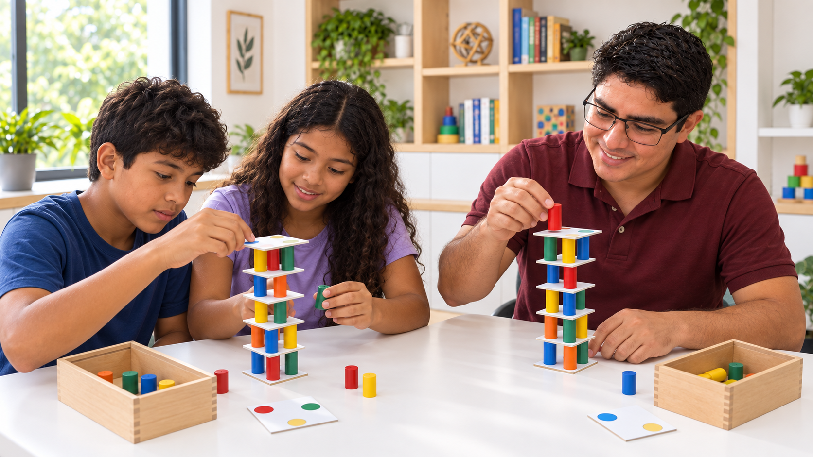

e equilíbrio
Planejamento · Equilíbrio · Estratégia
Torre Inteligente
Um desafio de construção no qual placas e cilindros coloridos precisam ser combinados com atenção. A cada novo nível, o participante planeja os apoios, avalia a estabilidade e ajusta sua estratégia para manter a torre em equilíbrio.

Como jogar
Construir sem perder o equilíbrio.
- Separe as placas e os cilindros coloridos.
- Escolha uma placa como base e posicione os cilindros sobre as cores indicadas.
- Alterne placas e cilindros para acrescentar novos níveis.
- Construa a torre mais alta possível sem derrubá-la.
- Se a torre cair, encerre a rodada e registre a altura alcançada.
A atividade pode ser realizada individualmente, em duplas ou de modo cooperativo, com os participantes discutindo cada escolha antes de acrescentar uma peça.
Objetivo pedagógico
Antecipar, testar e revisar escolhas.
O interesse do jogo não está apenas na altura final. Durante a construção, o participante formula hipóteses sobre estabilidade, observa a distribuição dos apoios e modifica suas decisões quando percebe riscos de queda.
Por que a posição dos apoios altera o equilíbrio da torre?
O que o jogo mobiliza
Cognição e Matemática na mesma experiência.
Funções cognitivas
Planejar e controlar a ação.
- atenção sustentada e seletiva;
- planejamento da posição de cada apoio;
- coordenação motora fina e controle do movimento;
- controle inibitório e espera da vez;
- flexibilidade cognitiva e revisão do erro;
- tolerância à frustração.
Aprendizagem matemática
Perceber relações espaciais.
- equilíbrio e distribuição espacial;
- simetria e posição relativa;
- contagem de níveis e peças;
- comparação e medição de alturas;
- reconhecimento de cores e padrões;
- estimativa de estabilidade.
Possibilidades de adaptação
Diferentes níveis de desafio.
O que observar
O processo importa mais que a torre pronta.
Durante a prática, o educador pode observar como o participante planeja, lida com o erro, sustenta a atenção, comunica sua estratégia e reorganiza a ação após uma tentativa instável. Essas observações têm finalidade pedagógica e não constituem avaliação clínica ou diagnóstico.